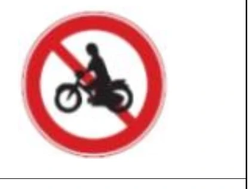

892. Giải thích nào đúng nhất về biển báo sau?

- ①Cấm xe máy hai bánh và xe đạp lưu thông
- ②Cấm xe máy hai bánh và xe đạp gắn động cơ lưu thông
- ③Trừ xe đạp và xe máy hai bánh, các phương tiện thô sơ và cơ giới có thể đi qua bất cứ lúc nào
- ④Trừ xe đạp gắn động cơ và xe máy hai bánh, các phương tiện thô sơ và cơ giới có thể đi qua bất cứ lúc nào
Xem đáp án
Đáp án
② Cấm xe máy hai bánh và xe đạp gắn động cơ lưu thông
Căn cứ
Nội quy thi hành Luật Giao thông đường bộ [Phụ lục 6] Biển báo quy định 205, biển cấm mô tô hai bánh, xe đạp gắn máy đi qua, được lắp đặt ở phía trước khu vực, đoạn đường hoặc nơi cấm giao thông, ở giữa hoặc bên phải đường.
Phần căn cứ là bản dịch máy để tham khảo.